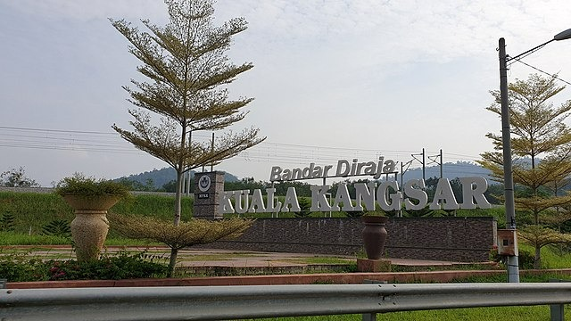

When the state of Perak was established in the 1500s, its abundance of metals—especially tin—came from underground mining. This made the state a target for invasion throughout time from other parties that desired this wealth. The Acehnese, the Siamese, and the Bugis all attempted invasions in the 19th century. However, the British were also active in this region of Asia during this time, seeking allies and resources. The British granted the monarch of Perak's request for protection, and in exchange they named a "British Resident" to serve as the administrator of Perak. The administrator is stationed in Kuala Kangsar, where the monarch now resides but has limited political authority.

In addition to planting Malaysia's first crop of rubber trees, the British expanded the tin mining sector in Perak. As the riches increased, Kuala Kangsar developed into a coveted city with impressive architecture.The wealthiest families on the Malay Peninsula would send their kids to this type of school so they could receive a British education.
.png)